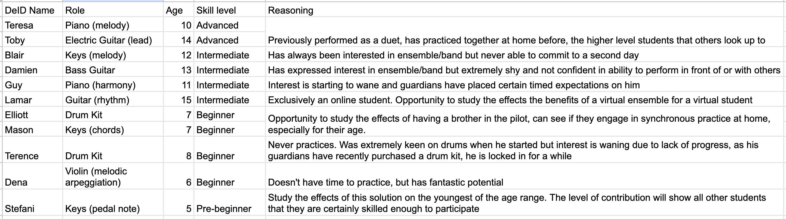

Critique
On the use of technology
Bush (2017) calls for educators to ensure that technology aligns with best practices, promotes equity and inclusivity, and is used to enhance rather than compromise music education. Rather than relying solely on technology, my approach leverages it as a complementary tool. Students are not required to have equipment at home as filming is done at the school, which allows for inclusivity of all students. Technology does not compromise education as we have not taken away from the interpersonal nature of private music teaching and learning, but extends it to something quite exciting and collaborative.
Hanrahan et al. (2019) warns educators about the potential negative consequences of excessive reliance on technology, including decreased independence, distractions, and isolation. These are also echoed by Hein (2017) and Medvinsky (2017). The use of technology in this solution is not excessive but carefully integrated to facilitate collaboration, ideation, and feedback collection without overshadowing the importance of in-person music education. In fact, technology is being used to bring students together to create something collaborative in an education field that is exclusively private learning, which can be isolating. By putting students as the core focus in the design process, we are instead giving them independence and ownership of the final ensemble program.
Hanrahan et al. (2019) and Savage (2017) also warn of the creation of a digital divide, which may hinder participation in ensembles, particularly for lower-income families. As mentioned earlier, students do not require additional equipment at home, nor does this venture add to their costs. While there may be some barriers to accessing any communication or information hub decided by the stakeholders in the Ideate stage, we already have plans to facilitate this barrier.
On the choice of participants
Prior to this iteration of the project, I had originally wanted to select members for the design team and the pilot ensemble. Students had been hand-picked to fulfil demographic/psychographic checkboxes for the group, such as age, motivation, skill level, etc.
I ultimately opted against that and can now engage in a critical reflection of my initial decision with the awareness of the possibilities afforded by an open recruitment process and a transparent test run. By choosing those who I know will result in good ideas is alienating those who really need the help to become motivated and passionate again. Involving all students in the development of learning resources offers several advantages as it not only increases motivation and engagement by giving students a sense of ownership in their learning process but also fosters critical thinking skills as they consider how to present information effectively (Collis & Moonen, 2006).
Additionally, open recruitment ensure fairness and transparency in the selection process. This can help in building trust and credibility, both among the students and within the broader school community. This approach avoids favouring a specific group and ensures that every student has the chance to participate, learn, and contribute to the project.
Something of note is that we limited the reach for participants to our own school due to time constraints. We would have much more holistic data had we included other schools and their stakeholders as well. While this is a good pilot run, there are certainly chances to expand and gather more data. It would be interesting to see the results from more affluent areas of Sydney, different states, more classically focused schools, and even independent teachers not part of a larger school.
On the potential effects
The potential of the design process and it's resulting hybrid ensemble program has great effects on bringing ensembles into this music school and making it more accessible for those who may have busy schedules. This will give many students their first taste of playing in an ensemble/band or even hearing themselves playing with other parts. Having had a taste of the enriching ensemble experience, students may be more inclined to accommodate in-person ensembles into their already busy schedules, further enhancing their musical journeys.
Another notable prospect is the introduction of student-led hybrid ensembles, promising numerous advantages for our music education program. Organic creations of these ensembles reap the benefits of peer and near-peer mentorship, both which involve students mentoring and guiding each other in their learning. Benefits include self-analysis of performance, performance itself, a positive feelings towards music, and general social skills (MacLeod et al., 2020). This also further fulfils the "autonomy" need as outlined by SDT (Evans, 2015). By granting students the autonomy to initiate and organise their own ensembles using the resources provided and their experience in the program guided by teachers, we empower them to actively shape their musical experiences and exercise their creativity.
In Closing
This experience has been truly enlightening, and my team and I anticipate applying this model for the launch of our e-Semble program in 2024.